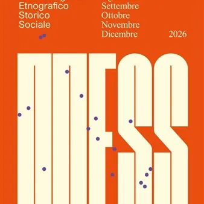

da dom 6 dic a dom 13 dic · dalle 10:30
COSE, COS’È? In viaggio nei musei etnografici e storici del Friuli Venezia Giulia
𝟑𝟔 𝐚𝐩𝐩𝐮𝐧𝐭𝐚𝐦𝐞𝐧𝐭𝐢 𝐝𝐢 𝐝𝐢𝐝𝐚𝐭𝐭𝐢𝐜𝐚 𝐞 𝐦𝐞𝐝𝐢𝐚𝐳𝐢𝐨𝐧𝐞 𝐜𝐮𝐥𝐭𝐮𝐫𝐚𝐥𝐞 𝐧𝐞𝐢 𝟏𝟖 𝐦𝐮𝐬𝐞𝐢 𝐞𝐭𝐧𝐨𝐠𝐫𝐚𝐟𝐢𝐜𝐢 𝐞 𝐬𝐭𝐨𝐫𝐢𝐜𝐢 𝐝𝐞𝐥𝐥𝐚 𝐫𝐞𝐭𝐞 𝐌𝐄𝐒𝐒 𝐢𝐧 𝐅𝐫𝐢𝐮𝐥𝐢 𝐕𝐞𝐧𝐞𝐳𝐢𝐚 𝐆𝐢𝐮𝐥𝐢𝐚 Parte il primo agosto 2026 la nuova rassegna di didattica e mediazione culturale della rete MESS – Museo regionale Etnografico Storico Sociale del…
 Indicazioni
Indicazioni
- Costi e prenotazioni
- Costo non indicato · Prenotazione non indicata
- Programma
- Programma da verificare. Apri la fonte ufficiale per orari e possibili aggiornamenti.
- In caso di maltempo
- Nessuna indicazione specifica pubblicata.
- Note
- Acquisito automaticamente dalla fonte.
L’EVENTO
Descrizione completa
𝟑𝟔 𝐚𝐩𝐩𝐮𝐧𝐭𝐚𝐦𝐞𝐧𝐭𝐢 𝐝𝐢 𝐝𝐢𝐝𝐚𝐭𝐭𝐢𝐜𝐚 𝐞 𝐦𝐞𝐝𝐢𝐚𝐳𝐢𝐨𝐧𝐞 𝐜𝐮𝐥𝐭𝐮𝐫𝐚𝐥𝐞 𝐧𝐞𝐢 𝟏𝟖 𝐦𝐮𝐬𝐞𝐢 𝐞𝐭𝐧𝐨𝐠𝐫𝐚𝐟𝐢𝐜𝐢 𝐞 𝐬𝐭𝐨𝐫𝐢𝐜𝐢 𝐝𝐞𝐥𝐥𝐚 𝐫𝐞𝐭𝐞 𝐌𝐄𝐒𝐒 𝐢𝐧 𝐅𝐫𝐢𝐮𝐥𝐢 𝐕𝐞𝐧𝐞𝐳𝐢𝐚 𝐆𝐢𝐮𝐥𝐢𝐚 Parte il primo agosto 2026 la nuova rassegna di didattica e mediazione culturale della rete MESS – Museo regionale Etnografico Storico Sociale del Friuli Venezia Giulia , che fino alla fine dell’anno porterà nei musei del territorio 36 appuntamenti gratuiti dedicati a bambini, famiglie e comunità. L’iniziativa rappresenta una delle prime azioni realizzate nell’ambito della rete MESS e si inserisce nell’ Azione Attuativa “Mediazione” , prevista dalle convenzioni tra l’ Ente Regionale per il Patrimonio Culturale del Friuli Venezia Giulia – ERPAC e i musei aderenti, con l’obiettivo di sviluppare un’offerta educativa integrata, accessibile e diffusa sul territorio. La rassegna propone 36 laboratori ospitati nei 18 musei della rete MESS. Ogni appuntamento prende spunto dagli oggetti, dalle collezioni e dalle storie custodite nei musei per esplorare concretamente quelle relazioni, saperi e pratiche che costruiscono il legame con un territorio, la sua cultura e la sua storia. La rassegna permette di fare un viaggio nei luoghi in cui il patrimonio culturale dialoga con i temi del paesaggio, del lavoro, delle migrazioni, delle tradizioni e della vita quotidiana. La progettazione e la realizzazione dei laboratori sono curate da Damatrà Onlus e 0432 Associazione Culturale . Tutti gli incontri , dalla durata indicativa di un’ora e mezza, sono liberi e gratuiti fino ad esaurimento posti. Per una migliore organizzazione è gradita una prenotazione preventiva. Per prenotazioni scrivere a prenotazione.mess@regione.fvg.it e chiamare il 0432 235757 da lunedì a venerdì dalle 9.00 alle 13.00.
Scopri gli appuntamenti di Cose, cos’è? proposti al Museo dell’Arte Fabbrile e delle Coltellerie
Domenica 6 Dicembre 2026
ore 10.30
Quell’occhio di gesso dall’animo acceso Domenica 13 Dicembre 2026
I Cercacose e le forbici
IL PROGRAMMA
Programma e orari
Appuntamenti raccolti dalle fonti elencate. Dove manca un orario, non è ancora disponibile in questa scheda.
Programma pubblicato
- ore 10.30
INFORMAZIONI UTILI
Prima di partire
- Controllare la fonte prima di partire.
ORGANIZZAZIONE